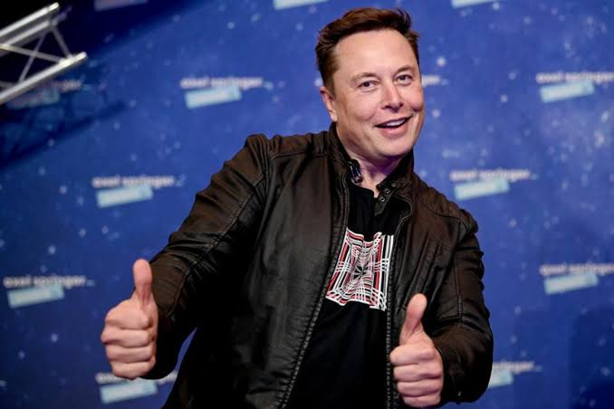

Elon musk

Nascimento: 28 de junho de 1971 (idade 51 anos), Pretória, África do Sul
Email: Elonmask@gmail.com
telefone (11) 954350623
lon Reeve Musk é um empreendedor e filantropo sul-africano-canadense, naturalizado norte-americano. Ele é o fundador, diretor executivo e diretor técnico da SpaceX; CEO da Tesla, Inc.; vice-presidente da OpenAI, fundador e CEO da Neuralink; co-fundador, presidente da SolarCity e proprietário do Twitter.
Compentêcias
Experiencia
SpaceX
CEO e CTO
2016 e Atual
Tesla
CEO 2014 e Atual
Endereço
Rua:
Av.1 de maio,720
Cidade:
São Paulo,SP
Bairro:
Vila Chavantes
Formação Acadêmica
Universidade da Pensilvânia (1992-1997)
Economia e Física
2016-Atual
Instituto Federal Dos Milionários
Aprendeu Economizar seu salario minimo
2010-2013